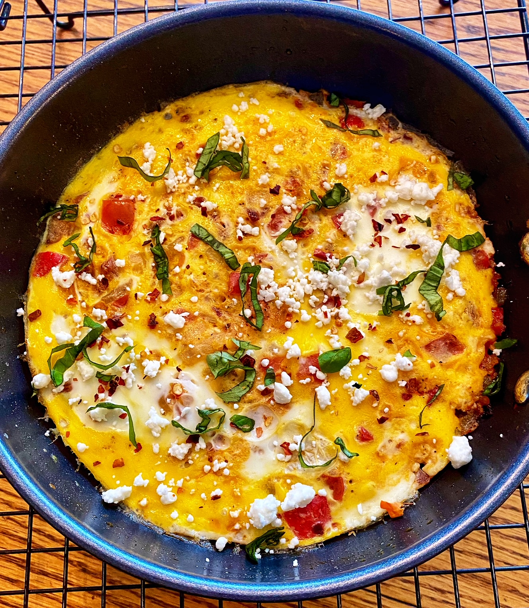

Menemen
- 15 min
- 2 servings
- 683 calories

Description
This Turkish-inspired egg dish is very similar to the way some Mexican egg breakfasts are prepared. Very versatile and you can control the level of spiciness.
Ingredients
- 1 tablespoon extra-virgin olive oil
- ¼ cup chopped onion
- 2 tablespoons diced red bell pepper
- 2 tablespoons diced Aleppo chiles, or to taste
- ½ teaspoon red pepper flakes
- 1 teaspoon minced garlic
- ¼ cup chopped tomato
- salt and ground black pepper to taste
- 3 large eggs, beaten
- 1 tablespoon thinly sliced basil leaves
- 1 tablespoon crumbled feta cheese
Steps
- Heat olive oil in a skillet over medium heat. Add onion, bell pepper, chiles, and red pepper flakes. Cook and stir until onions are soft and translucent, 5 to 6 minutes. Add garlic and cook until fragrant, about 1 minute. Add tomatoes, with their juices, and season with salt and pepper. Cook until tomatoes are softened, 4 to 6 minutes.
- Add eggs to the skillet, tilting the skillet until eggs cover skillet completely. Do not mix. Cook until eggs are set, 3 to 5 minutes.
- Top with basil and feta cheese.